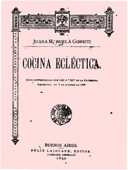

La cocina boliviana está, además, mediada por la globalización y su consecuente importación de nuevos ingredientes, nuevas recetas y nuevas costumbres gastronómicas. De hecho, mucha comida rápida se consume en el país. Según datos de 2015, en la ciudad de La Paz había más de mil lugares de venta de comida rápida y, según el Gobierno Autónomo Municipal de dicha ciudad, al menos la mitad eran ilegales. De hecho, la cantidad de tales negocios se habría triplicado en los últimos 20 años.20 Sin embargo, con la alza en el consumo de comida rápida, también se han abierto espacios críticos o de vanguardia. Por ejemplo, en 2005 un grupo de cocineros elaboró un "manifiesto" de la nueva cocina boliviana el cual, entre sus puntos más importantes, afirma que: "la comida del boliviano respeta los ciclos naturales de cultivo y las regiones que lo producen", que "es diversa como lo son las culturas que habitan esta tierra" y que "se enorgullece de haber aportado al mundo alimentos troncales para la dieta humana".21 Dentro de esta nueva ola pueden contarse los nombres de cocineros como el de Marco Quelca.
|  |